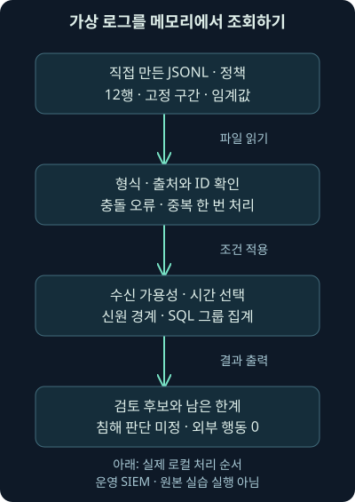
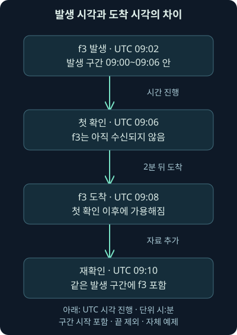
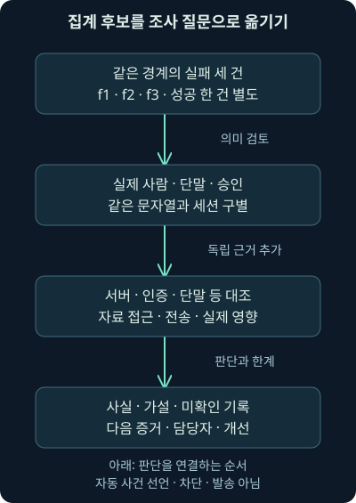

종합 실습: 여러 로그에서 조사 기록까지
첫째 날 26강. 자체 가상 로그를 실제 로컬 SQL로 검색하며 중복·도착 지연·시간 필드·집계와 사건 판단을 구분합니다.
1. 검색 한 번으로 사건 결론까지 갈 수 있을까요?
앞 강의에서는 출고 업무를 보호한다는 목표에서 관측·경보·조사·기록·대응을 연결했습니다. 이제 직접 만든 로그를 읽고 검색해 보겠습니다. 숫자가 나오는 순간보다 왜 그 숫자가 나왔고 무엇까지 말할 수 있는지를 설명하는 것이 이번 실습의 목표입니다.
범위는 가상 기록 열두 행의 형식 확인, 중복 처리, 도착 시점, 시간 구간, 신원 범위, 실제 SQL 집계, 조건 변경, 조사 메모입니다. Python과 SQLite로 로컬 계산을 실제 실행했습니다. 원래 교재의 별도 워크북·가상 위키에 들어 있는 Elastic 실습을 수행한 것은 아닙니다. 실제 SIEM·계정·단말·서버·네트워크를 변경하거나 조사하지 않았습니다.
이번 자료는 모두 독립 가상 예제입니다. 192.0.2.25, 198.51.100.44, 203.0.113.8은 문서용 주소이고 .example 이름은 설명용입니다. 이 주소나 이름으로 실제 접속하지 않습니다. 공격·감염·침해 성공의 정답을 미리 심어 둔 자료도 아닙니다.
2. 안내장과 기록과 계산기를 나누어 준비합니다
자료는 가상 로그, 사용 사례와 조건, 검색 프로그램, 실행 설명 네 파일입니다. 같은 폴더에 둡니다. 프로그램은 이 파일을 읽고 결과를 화면에 출력합니다. 원본을 수정하거나 외부 요청을 보내지 않습니다.
JSONL은 각 줄에 JSON 객체 한 개씩 담는 형식입니다. 여기서는 한 줄이 한 출처에서 전달된 기록입니다. 같은 원기록이 재전송되어 두 줄이 될 수도 있으므로 처음부터 “한 줄이 한 사건”이라고 가정하지 않습니다. training-investigation-v1은 직접 정한 교육용 조건 형식이며 제품 API나 Elastic 표준 형식이 아닙니다.
Python은 프로그램을 실행하는 언어 환경이고, SQLite는 별도 서버 없이 사용할 수 있는 데이터베이스 엔진입니다. SQL은 구조화된 자료를 조회하는 언어입니다. 이번에는 메모리 안에만 표를 만들고 실제 SQL을 실행합니다. 파일로 사건 데이터베이스를 만들거나 기존 서비스에 연결하지 않습니다.
3. 먼저 어떤 질문을 찾는지 문장으로 적습니다
“정해진 시간 구간에 같은 출처·신원 영역·사용자·출발 주소로 인증 실패가 세 건 이상 기록된 묶음을 검토 대상으로 찾는다.” 이것이 기본 조건입니다. 성공 여부나 공격자 이름, 자료 유출의 확정까지 포함한 문장이 아닙니다.
신원 영역, 이 예제의 realm은 같은 사용자 문자열이 어느 관리 범위에 속하는지 구별하는 값입니다. corp.example의 lee와 lab.example의 lee를 자동으로 같은 계정으로 합치지 않습니다. 현실에서는 디렉터리·테넌트·서비스 계정 식별자와 제품의 의미를 확인해야 합니다.
세 건이라는 임계값과 6분 구간은 직접 정한 학습 조건입니다. 일반적인 공격 기준이나 운영 권고로 가져가지 않습니다. 실패가 적어도 중요한 계정의 비인가 사용일 수 있고, 실패가 많아도 비밀번호 변경 뒤의 정상 재시도일 수 있습니다.
4. 열두 행을 출처와 역할로 나누어 읽습니다
자료에는 auth-A, auth-B, host-A, dns-A, proxy-A라는 다섯 출처 이름이 있습니다. 인증 자료 두 묶음 외에 단말·이름 조회·전송 관측이 있고, 일부 기록의 재전송·신원 누락·늦은 도착을 의도적으로 넣었습니다. 출처 수와 관측 역할·사건 수는 같지 않습니다.
| 기록 묶음 | 가상 내용 | 확인할 의미 |
|---|---|---|
| auth-A의 f1·f2·f3 | 같은 영역·사용자·주소의 인증 실패 | 세 건의 원기록과 도착 시점 |
| f2의 두 번째 전달 | 내용까지 같은 재전송 | 사건을 늘리지 않는 중복 처리 |
| auth-A의 s1 | 같은 묶음의 성공 기록 | 실제 사람·권한·세션의 별도 조사 |
| auth-B의 b1·b2 | 다른 영역·주소의 lee 실패 | 사용자 문자열만으로 합치지 않기 |
| host·dns·proxy의 관측 | 프로그램·이름 조회·큰 전송 | 인증 세션과의 연결은 미확인 |
| m1과 old | 신원 누락, 구간 바로 전 발생 | 자료 품질과 시간 조건의 영향 |
표는 자료의 역할을 안내합니다. 실제 파일의 detail은 가상 설명이며 그 문장을 코드가 증거 검증에 사용하는 것은 아닙니다. “인증 세션과 연결 미확인”이라는 설명을 적었다고 프로그램이 연결을 시험한 결과가 되는 것은 아닙니다.
5. 기록 필드의 뜻부터 맞춥니다
source는 출처, id는 그 출처 안의 기록 식별자, kind는 인증·프로세스·이름 조회·전송 같은 기록 종류입니다. user, realm, src_ip는 사용자·신원 영역·출발 주소를 나타내도록 직접 정의했습니다. 같은 필드 이름이라도 다른 제품에서 뜻이 같다고 보장되지 않습니다.
outcome은 이 가상 출처가 기록한 결과이며 인증에서는 failure 또는 success입니다. 성공 값은 해당 출처가 성공으로 기록했다는 뜻입니다. 실제 사람이 승인되었는지, 이후 어떤 자료에 접근했는지는 따로 확인해야 합니다. 단말과 프록시 기록에는 이 둘 대신 관측 상태를 넣었습니다.
event_time은 발생 시각, received는 이 수집 단계의 수신 시각입니다. 시간대가 명시된 값을 UTC로 맞추어 계산합니다. 시계가 실제로 동기화되었는지까지 이 프로그램이 검증하는 것은 아닙니다. 출처가 준 값이 의미하는 범위를 먼저 확인하는 습관이 필요합니다.
6. 같은 기록인지 어떻게 정하나요?
이번 자료의 중복 키는 (source, id) 조합입니다. 괄호 안 두 값을 함께 비교합니다. auth-A의 f2가 같은 내용으로 다시 전달되면 한 원기록으로 묶습니다. 이 정책은 자체 자료가 정한 규칙이며 현실의 ID 체계를 전부 대신하지 않습니다.
같은 ID라도 출처가 다르면 다른 기록으로 남깁니다. 반대로 같은 출처·ID인데 내용이 다르면 무엇이 바뀐 것인지 알 수 없으므로 충돌 오류로 멈춥니다. 마지막에 받은 값을 조용히 정답으로 덮어쓰지 않습니다. 실제 운영에서는 원본·변환·재전송·갱신 정책을 출처에 맞춰 정해야 합니다.
신원이 빈 m1도 원본에서 지우지 않습니다. 시간 구간에는 들어오지만 신원 묶음의 집계에 쓸 수 없는 인증 기록으로 따로 셉니다. 자료 부족을 낮은 위험이나 정상으로 해석하지 않기 위해서입니다.

7. 기본 시간 조건은 세 값으로 정합니다
기본 발생 구간은 2026년 11월 1일 09:00:00 이상, 09:06:00 미만입니다. 시작은 포함하고 끝은 제외하는 구간입니다. 옆 구간을 이어 검색할 때 경계의 같은 기록을 두 구간에 모두 세지 않도록 하는 한 가지 방식입니다. 실제 도구의 시간 선택 의미도 확인해야 합니다.
조사 기준 시각 as_of는 09:10:00입니다. 수신 시각이 그때까지인 고유 기록만 조회에 사용할 수 있다고 가정합니다. 이미 파일에 적혀 있다는 이유로 미래에 도착할 자료를 과거 조사에서도 알았다고 취급하지 않습니다.
f3는 09:02에 발생했지만 09:08에 도착합니다. 기본 조사에서는 사용할 수 있고, 09:06 조사에서는 아직 사용할 수 없습니다. 같은 발생 구간을 다시 보더라도 지식 상태가 달라지는 이유입니다. 실제 제품의 색인 지연까지 재현한 것이 아니라 수신 시각만으로 정한 자체 가용성 모델입니다.
8. 먼저 기본 명령을 실행합니다
python review_logs.py events.jsonl use-case.jsonpython은 실행기, review_logs.py는 프로그램, 뒤의 두 경로는 로그와 조건 파일입니다. 이번 검증에는 Python 3.12.14, 그 환경의 SQLite 3.53.1을 사용했습니다. 이것은 실제 실행 환경의 값이며 어느 쪽도 영구적인 최신 버전이라고 부르지 않습니다.
실제 결과는 입력 12행, 조사 시각까지 가용한 전달 12행, 자료 전체의 중복 1행, 고유 가용 기록 11개, 선택 시간 구간의 기록 10개였습니다. 선택된 인증 자료 중 신원 값이 빠진 기록은 1개였습니다. 결과의 개수마다 무엇을 세었는지 확인해 주세요.
검토 후보는 auth-A / corp.example / lee / 198.51.100.44 묶음 한 개입니다. 실패 원기록은 f1, f2, f3 세 건이며 같은 묶음의 성공 기록은 한 건입니다. 후보 한 개를 사건 한 개나 계정 탈취 한 건이라고 표현하지 않습니다.
9. 실제 실행한 SQL을 천천히 읽습니다
프로그램은 파이썬에서 입력·시간·중복을 확인한 뒤 메모리 안의 observations라는 표에 가용 자료를 넣습니다. 다음은 그 프로그램에서 실제 실행한 집계 질의입니다. ? 자리에는 시작·끝·임계값을 순서대로 전달합니다. 자료 값을 SQL 문장에 직접 이어 붙이지 않고 매개변수로 전달합니다.
SELECT source, realm, user, src_ip, COUNT(*) AS failures
FROM observations
WHERE kind = 'auth' AND outcome = 'failure'
AND realm <> '' AND user <> '' AND src_ip <> ''
AND selected_time >= ? AND selected_time < ?
GROUP BY source, realm, user, src_ip
HAVING COUNT(*) >= ?
ORDER BY source, realm, user, src_ipSELECT는 결과로 보고 싶은 값을 고르고 FROM은 어느 표를 읽을지 정합니다. COUNT(*)는 조건을 통과한 행을 셉니다. AS failures는 그 개수에 failures라는 결과 이름을 붙입니다. 성공·실패를 모두 센 뒤 실패라고 이름만 바꾸는 계산은 아닙니다.
WHERE는 먼저 각 행을 고르는 조건입니다. 인증 종류와 실패 결과만 고르고 AND로 나머지 조건을 모두 만족하게 합니다. <> ''는 빈 문자열과 다르다는 뜻으로, 신원 영역·사용자·주소가 비어 있는 행을 이 집계에서 제외합니다. 원본을 삭제하는 것은 아닙니다.
selected_time >= ?와 < ?는 선택한 시간 필드의 시작 포함·끝 제외 조건입니다. 기본값은 발생 시각이지만 뒤에서 수신 시각으로 바꿔 보겠습니다. 시간대가 다른 문자열을 그대로 사전 순서로 비교하지 않고 UTC 기준 수치로 정규화한 값을 사용합니다.
10. 묶음과 필터와 정렬은 서로 다른 작업입니다
GROUP BY는 출처·영역·사용자·주소가 같은 행끼리 묶습니다. 출처와 영역을 생략하면 같은 lee라는 문자열이 의도와 다르게 합쳐질 수 있습니다. 반대로 현실에서 실제로 같은 계정의 여러 출처를 합치려면 공통 식별자·의미·중복 정책을 먼저 검증해야 합니다.
HAVING COUNT(*) >= ?는 묶은 뒤 실패 개수가 임계값 이상인 그룹을 남깁니다. 행을 고르는 WHERE와 그룹 결과를 고르는 HAVING의 위치가 다릅니다. ORDER BY는 출력 순서를 일정하게 만들기 위한 정렬이며, 이 목록을 위험 우선순위대로 정렬했다는 뜻은 아닙니다.
SQL의 역할은 가상 표에서 조건과 집계를 계산하는 것입니다. Python 3.12 공식 sqlite3 문서와 SQLite의 SELECT 설명을 2026년 11월 6일 확인했습니다. 현재 문서 페이지의 패치 번호와 실제 실행한 3.12.14를 같은 것으로 표시하지 않습니다. Python의 sqlite3 설명, SQLite의 조회 문법
11. 같은 묶음의 성공 한 건은 어떻게 읽나요?
프로그램은 후보의 같은 출처·영역·사용자·주소 조건에 성공 기록이 있는지도 별도로 셉니다. 실패 횟수에는 포함하지 않습니다. 이 값이 1이라는 사실은 그 묶음으로 성공이 기록됐다는 뜻입니다. 실패를 낸 주체와 성공한 주체가 같거나 실패 직후의 같은 세션이라는 증거는 아닙니다.
가상 자료의 단말 프로그램 실행과 프록시 전송을 여기에 바로 붙이지도 않습니다. 시간과 사용자 문자열이 비슷해도 장치·주소 변환·계정·프로세스·세션·업무 승인의 연결이 남아 있습니다. 프로그램의 cross_source_session_links는 not_established, 출처 간 세션 연결 미확인입니다.
incident_verdict도 unresolved로 남습니다. 조건 일치와 사건 판정은 다른 작업이기 때문입니다. 실제로 승인되지 않은 접속과 자료 접근 근거가 추가된다면 정해진 절차로 조사·영향 완화를 진행하고, 승인 작업의 근거가 맞는다면 정상 설명을 검토할 수 있습니다.
12. 조사 시각을 09:06으로 바꾸어 봅시다
python review_logs.py events.jsonl use-case.json --as-of 2026-11-01T09:06:00Z--as-of는 그 시각까지 도착한 자료만 사용할 것이라는 선택 사항입니다. 실제 컴퓨터 시계를 바꾸거나 과거의 서버로 접속하지 않습니다. 끝의 Z는 UTC입니다. 발생 구간은 여전히 09:00 이상~09:06 미만으로 유지됩니다.
실제 실행에서 f3가 아직 가용하지 않아 출처 A의 대상 실패는 두 건이 되고, 기본 임계값 세 건에 도달한 후보는 0개가 됐습니다. 자료가 조용해졌거나 계정이 안전해졌다는 결론이 아닙니다. 그 시점에 사용할 수 있는 자료로는 조건이 충족되지 않았다는 뜻입니다.
수집기가 지연된 이유는 이 프로그램이 알아내지 못합니다. 수집·전달·색인·권한·보존·파싱·시간 오류를 실제 환경에서 구별해야 합니다. 결과가 없을 때도 자료 가용성을 확인해야 하는 이유를 눈으로 확인한 것입니다.

13. 시간 필드가 바뀌면 같은 개수도 다른 자료입니다
python review_logs.py events.jsonl use-case.json --time-field received--time-field received는 구간을 발생 시각 대신 수신 시각에 적용합니다. 조사 기준은 기본 09:10이므로 이미 도착한 자료의 집합 자체는 같습니다. 다만 어느 자료가 09:00~09:06 구간에 속하는지 다른 기준으로 고릅니다.
실제 결과에서 후보의 실패 수는 다시 세 건이지만 ID는 old, f1, f2입니다. old는 08:59:59에 발생해 기본 발생 구간 밖이었으나 09:00:01에 도착합니다. f3는 09:08 도착이라 수신 구간 밖입니다. 숫자만 같다고 같은 질문에 같은 답이 나왔다고 말할 수 없습니다.
| 조건 | 출처 A의 후보에 포함된 실패 ID | 후보 수의 해석 |
|---|---|---|
| 기본 발생 시각·09:10 가용 | f1·f2·f3 | 발생 구간의 검토 묶음 |
| 발생 시각·09:06 가용 | 임계값 미달 | 아직 f3를 볼 수 없음 |
| 수신 시각·09:10 가용 | old·f1·f2 | 수신 구간이라는 다른 질문 |
Elastic ECS도 사건 시각과 수집·생성 단계의 시각을 구별합니다. 2026년 11월 6일 공식 필드 설명을 대조했습니다. 이번 파일은 ECS 구현이 아니며 자체 received를 제품의 특정 필드와 무조건 같은 단계라고 가정하지 않습니다. ECS의 이벤트 필드
14. 임계값을 바꾸면 탐지 성능을 알 수 있을까요?
python review_logs.py events.jsonl use-case.json --threshold 4--threshold 4는 실패 집계가 네 건 이상인 묶음을 남기라는 뜻입니다. 실제 실행에서 후보는 0개였습니다. 동일한 자료의 경계를 바꾼 결과이며 공격이 없어졌거나 탐지 품질이 좋아졌다는 뜻은 아닙니다.
임계값을 낮추면 검토량이 늘 수 있고 높이면 놓치는 조건이 생길 수 있습니다. 하지만 이 작은 자료에는 실제 악성 여부의 정답 집단이 없으므로 정밀도·재현율을 계산한 것처럼 말할 수 없습니다. 운영 목표·정상 예·놓치면 큰 영향이 생기는 예·담당 인력을 더해 평가해야 합니다.
SQL 조건 하나를 잘 맞추는 것과 사용 사례를 잘 운영하는 것은 다릅니다. 재전송·신원 누락·시간 선택·가용 시각이 변해도 의도한 질문을 유지하는지 함께 시험합니다.
15. 오류가 나야 하는 조건도 실제 시험했습니다
자료의 같은 출처·ID에 다른 내용이 들어오면 충돌 오류가 나도록 했습니다. 빠진 필수 필드, 잘못된 날짜·시간대, 허용하지 않은 인증 결과, 빈 자료, 거꾸로 된 구간과 양수가 아닌 임계값도 구별합니다. 오류를 조용히 후보 0개로 바꾸지 않습니다.
다른 출처가 같은 ID 문자열을 쓴 조건, 같은 순간을 다른 시간대 오프셋으로 적은 조건, 끝 경계의 포함 여부도 바꾸어 시험했습니다. 설명과 수치는 이 강의의 검증에서 실제 확인한 범위입니다. 실제 제품에서 같은 오류 처리나 수집 성능을 보장하는 시험은 아닙니다.
입력 네 파일의 실행 전후 바이트 해시가 같다는 것도 확인했습니다. 중복 제거와 조회를 메모리 안에서 했기 때문입니다. 단, 해시 불변은 원본이 바뀌지 않았다는 확인이지 가상 로그가 실제 사건 자료가 되었다는 뜻은 아닙니다.
16. 결과를 사건 메모로 옮깁니다
먼저 검색 범위를 씁니다. “발생 구간 09:00~09:06, 09:10까지 수신한 가상 자료, 출처·ID 중복 처리, 신원 누락 한 건은 신원 집계에서 제외”입니다. 다음에 후보 그룹과 실제 사용한 ID를 적습니다. 그래야 다른 사람이 숫자의 구성부터 재현할 수 있습니다.
그 뒤에 “같은 그룹의 성공 한 건은 추가 확인 대상이며, 단말·이름 조회·외부 전송과의 세션 연결과 실제 자료 내용은 미확인”이라고 씁니다. 반복 실패·정상 재시도·승인 작업·계정 오용의 가설을 비교합니다. 가설을 지원할 서버·인증·단말·프록시·방화벽·리졸버 기록과 담당자를 지정합니다.
이번 프로그램은 케이스를 만들거나 담당자에게 메시지를 보내지 않습니다. 계산 결과를 사람이 검토할 수 있게 출력한 단계입니다. 실제 등록·승인·차단·종결을 수행했다는 표현과 구별해야 합니다.

17. 단말과 전송 기록을 추가로 해석합니다
가상 단말의 프로그램 이름이 재고 점검과 관련되어 보인다고 정상으로 확정하지 않습니다. 파일 출처·서명·실행 주체·명령·읽은 자료·업무 승인을 확인합니다. 반대로 보고서에 자주 등장하는 도구 이름이라고 실행·반출·침해 성공을 동시에 확정하지도 않습니다.
storage.example 조회는 이름을 물어본 관측입니다. 실제 연결과 파일 실행은 다른 질문입니다. 프록시의 외부 방향 12,000,000바이트 관측도 파일의 내용이나 상대가 실제 보관한 자료를 직접 보여 주지 않습니다. 가상 설명의 숫자로 실제 패킷을 분석한 것처럼 말하지 않습니다.
센서가 한 방향만 보거나 암호화·재조립·보존·필터 때문에 내용이 빠질 수도 있습니다. 없다면 무엇을 놓칠지와 다른 출처로 확인할 질문을 남깁니다. 데이터가 더 있다는 이유로 자동으로 모든 기록을 하나의 공격 흐름으로 묶지 않습니다.
18. 운영 도구로 옮기기 전에 남는 차이를 확인합니다
KQL·SQL·제품의 상관 규칙은 서로 같은 언어가 아닙니다. 이 고정 구간 집계를 연속적인 이동 시간 창, 실제 경보 스케줄러, 분산 저장소의 중복 제거로 설명하지 않습니다. KQL이 필터에 집중하고 집계는 별도 기능·언어와 연결된다는 공식 설명도 2026년 11월 6일 재확인했습니다. Elastic KQL의 범위
실제 제품에서는 필드의 자료형·중첩 구조·시간 선택·권한·수신과 색인 지연·집계 경계·중복 정책·다른 출처의 개체 연결을 시험해야 합니다. 작은 예제의 명령이 통과했다고 실제 탐지 규칙이 배포·실행된 것은 아닙니다.
현재 시행한 것은 Python 3.12.14와 SQLite 3.53.1의 로컬 파일 읽기·메모리 집계·결과 출력입니다. 원본 워크북·VM·Kibana·Elasticsearch·실제 SIEM·원본 PCAP·인증 시도·외부 요청·차단·계정 변경·메시지 발송은 수행하지 않았습니다.
19. 첫째 날을 마치며 다음 학습으로 이어갑니다
이제 업무와 권한을 정하고, 필요한 자료를 찾고, 변환·검색·분류를 검증하고, 사실·가설·추가 확인을 기록하는 흐름을 한 번 연결했습니다. 계산이 정확하더라도 실제 사람·행위·영향이 자동으로 확정되지는 않는다는 점이 중심입니다.
다음 네트워크 학습에서는 주소·통신 방향·프로토콜·요청과 응답이 기록에 어떤 형태로 남는지 더 깊이 살펴봅니다. 기존 네트워크 강의는 그대로 보존하며 원문 학습 순서와의 대응을 점검해 이어갑니다. 이번 독립 실습을 원래 가상 환경이나 전체 과정의 수행 완료로 표시하지 않습니다.
20. 복습: 같은 숫자와 다른 질문을 구별합니다
질문 1. 입력 12행이면 독립 원기록도 12개인가요?
해설: 같은 f2가 두 번 전달됐습니다. 자체 자료의 출처·ID 조건으로 한 번 묶으면 고유 가용 기록은 11개입니다. 행·원기록·사건 수를 구별합니다.
질문 2. auth-B의 lee 두 건을 합치면 다섯 번 실패 아닌가요?
해설: 영역과 출처·주소가 다릅니다. 같은 사용자 문자열만으로 같은 계정이라고 연결하면 안 됩니다. 이번 집계는 이 경계를 보존합니다.
질문 3. 신원이 없는 m1은 정상인가요?
해설: 신원 집계에 쓸 수 없는 자료입니다. 누락을 따로 기록하고 원본을 남깁니다. 낮은 위험이나 정상이라는 결론이 아닙니다.
질문 4. 09:06 조사에서 후보 0개면 사건도 없었나요?
해설: 09:08 도착하는 f3를 아직 볼 수 없었습니다. 그 시점의 가용 자료로 조건 미충족이며, 침해 부재를 뜻하지 않습니다.
질문 5. 수신 시각으로 검색해도 세 건이면 같은 결과인가요?
해설: ID가 old·f1·f2로 바뀝니다. 기본의 f1·f2·f3와 다른 자료이며, 질문도 발생 구간에서 수신 구간으로 바뀌었습니다.
질문 6. WHERE와 HAVING은 왜 둘 다 있나요?
해설: WHERE는 집계 전 행의 조건, HAVING은 묶음 계산 뒤의 조건입니다. 실패 행과 신원을 고른 뒤 그룹의 실패 개수를 비교합니다.
질문 7. ORDER BY 순서대로 위험한 계정인가요?
해설: 일정한 출력 순서를 위한 정렬입니다. 업무 영향과 실제 위험을 평가한 우선순위가 아닙니다.
질문 8. 같은 그룹의 성공 한 건이 계정 탈취 성공인가요?
해설: 출처가 성공으로 기록했다는 사실입니다. 실제 사람·단말·세션·인가와 후속 행동을 확인해야 합니다.
질문 9. 임계값을 네 건으로 바꾸어 후보를 없애면 개선인가요?
해설: 조건 경계가 바뀐 결과입니다. 악성 정답 집단과 정상·누락 사례가 없으므로 탐지 성능 개선을 계산할 수 없습니다.
질문 10. 같은 출처·ID인데 내용이 달라도 마지막 값을 쓰면 되나요?
해설: 이 예제는 충돌 오류로 구별합니다. 갱신·재전송 정책을 확인하지 않고 조용히 덮으면 원본과 계산 근거가 사라집니다.
질문 11. SQL이 통과했으니 실제 SIEM 경보도 배포됐나요?
해설: 로컬 메모리에서 집계한 것입니다. 제품의 필드·스케줄·권한·저장·수집 조건과 실제 배포는 별도 검증입니다.
질문 12. 출력이 후보를 보여 줬으니 차단도 실행됐나요?
해설: 외부 행동은 0입니다. 후보는 사람의 검토 대상이며 실제 조치·메시지·사건 등록은 수행하지 않았습니다.